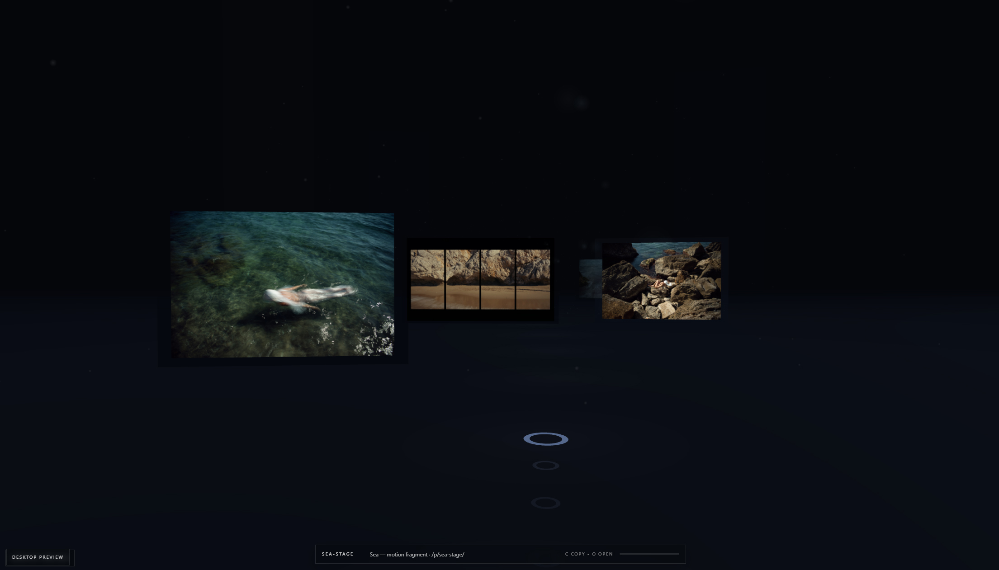
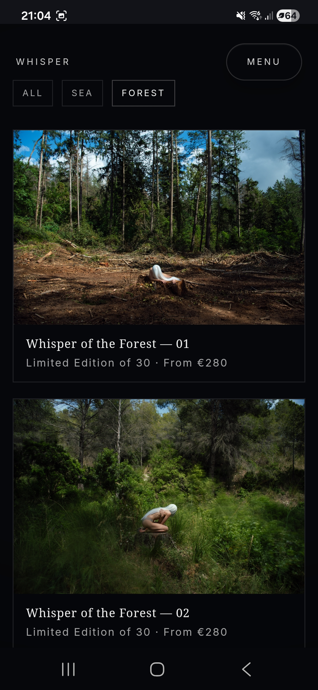
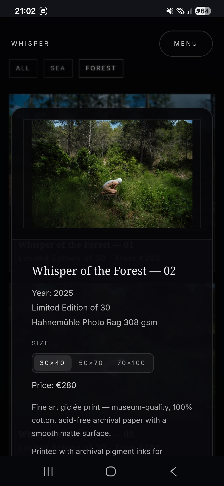
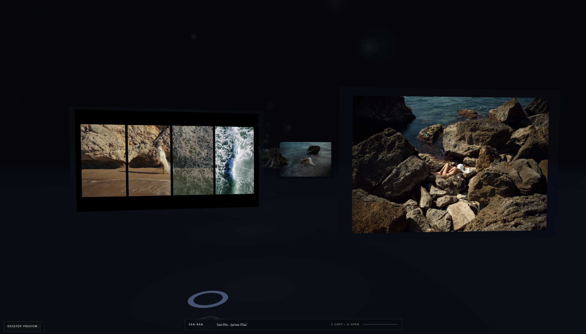
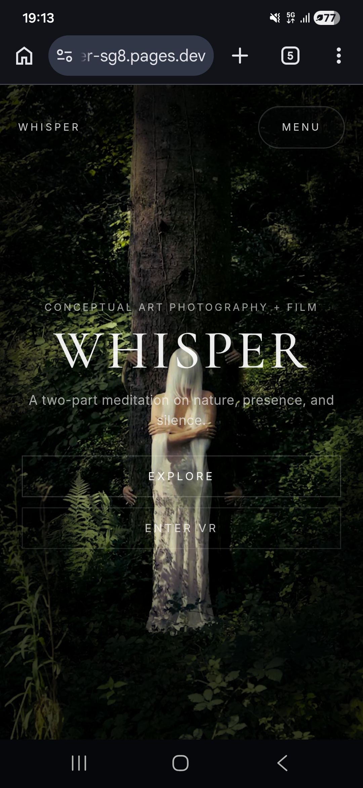
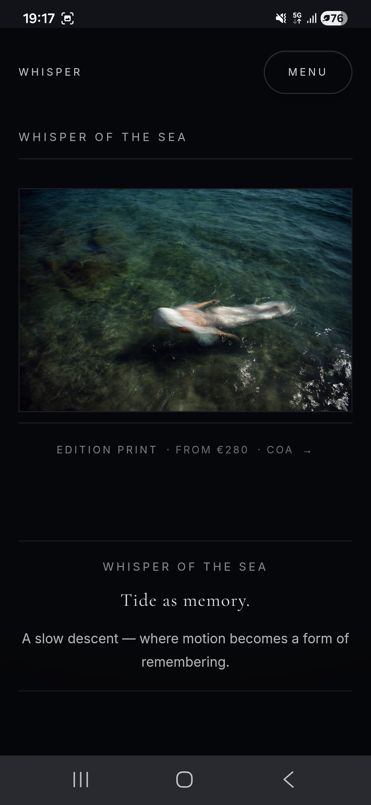

Документація українською мовою про нашу реалізацію мобільної каруселі для сторінки
WHISPER / Spatial Proof: як вона працює технічно, як побудована візуально, і як цей
підхід переносити на інші сайти як повторювану технологію.



01 / Призначення
Карусель замінює довгий вертикальний стек скріншотів на керований просторовий маршрут.
У мобільній версії сторінки ми не показуємо всі кадри один під одним. Ми створюємо один
сильний активний кадр у центрі, даємо користувачу відчуття сусідніх станів збоку, і
керуємо переходом через swipe, drag, кнопки Prev / Next та індикатори-точки. Так мобільна
сторінка лишається короткою, кінематографічною і зрозумілою.
Проблема
На мобільному довгі списки доказових екранів швидко перетворюють кейс на каталог.
Користувач скролить, але не відчуває структуру і втрачає головну історію.
Рішення
Один активний кадр керує увагою. Сусідні кадри видимі як контекст, але приглушені.
Стан переходить циклічно, тому маршрут не має тупика.
Результат
Сторінка виглядає як мобільний proof-room: не просто скріншоти, а інтерактивна
демонстрація поверхонь продукту, XR, print або collector flow.
Active frameSide previewsCircular indexDrag thresholdMotion-safeReusable data
01
02 / Де це реалізовано
Патерн зібраний з двох рівнів: універсальний showcase і спеціальний immersive-orbit для WHISPER.
Для звичайних case pages існує компонент CaseMobileShowcase. Для
WHISPER, де важливий ефект просторової кімнати, створений окремий блок
CinematicMobileField у WhisperCaseLayout. Вони мають
одну логіку: активний індекс, циклічне перемикання, swipe / drag, dots, фіксована сцена,
object-contain для медіа і motion-переходи.
Основна сторінкаsrc/ui/immersive/WhisperCaseLayout.tsx відповідає за immersive case, atlas, Quest orbit і mobile route orbit.
Універсальний блокsrc/ui/work/CaseMobileShowcase.tsx містить переносну логіку для мобільних кадрів у Work-кейсах.
Inspect modesrc/ui/work/CinematicInspectReveal.tsx відкриває активний кадр у повноекранному режимі з клавіатурою, swipe, wheel і thumbnail rail.
Даніsrc/data/immersive.ts зберігає кадри WHISPER: desktop, Quest VR і mobile з label, alt, caption, device.
Канонdocs/immersive-whisper-reference-pattern.md описує WHISPER як reference pattern для майбутніх immersive cases.
Dataframes[]: src, alt, label, caption, device
StateactiveIndex, wrapIndex, circularOffset
Viewactive center frame, side previews, controls, dots
02
03 / Технічна логіка
У центрі реалізації є один стан activeIndex і кілька способів змінити його.
Компонент не залежить від конкретних зображень. Він отримує масив кадрів, рахує активний,
попередній і наступний кадр, а потім рендерить їх у сцені. Ключове правило: всі методи
керування змінюють той самий activeIndex. Тому кнопки, swipe, drag і dots не конфліктують.
Після завершення drag ми порівнюємо горизонтальний зсув із порогом 42-44 px.
Якщо рух малий, кадр не перемикається. Якщо зсув ліворуч, відкриваємо наступний кадр;
якщо праворуч, попередній.
Reduced motion
Якщо користувач має увімкнений reduced motion, drag і transition спрощуються:
duration майже нульова, а декоративні рухи не стають бар’єром для користування.
03
04 / Візуальна структура
Сцена працює як маленька кімната: центральна площина активна, бокові площини дають глибину.
Візуально ми не робимо стандартний slider. Кадри поводяться як медіа-площини в просторі:
активний кадр має opacity 1, scale 1 і високий z-index; сусідні отримують меншу прозорість,
scale приблизно 0.78-0.82, легкий rotate і зміщення по X. Завдяки цьому користувач розуміє,
що можна свайпати, навіть без текстової інструкції.



Стабільна висота сцени
У WHISPER mobile orbit використовується фіксована висота h-[41rem] з
корекцією для вузьких екранів. Це запобігає стрибкам layout під час зміни кадру.
Без обрізання інтерфейсу
Для скріншотів використовується object-contain, тому UI всередині кадру
не обрізається. Це важливо для доказових сторінок, де треба бачити реальний продукт.
Атмосферна рамка
Темний фон, тонка сітка, кругова лінія і верхній/нижній gradient fade створюють
відчуття proof-room, але не заважають читанню активного кадру.
Керування без шуму
Prev / Next винесені у верхній контрольний ряд, dots знаходяться біля label активного
кадру, а CTA Inspect frame відкриває повноекранний перегляд.
04
05 / Motion rules
Анімація пояснює ієрархію кадрів, а не просто прикрашає інтерфейс.
Framer Motion використовується для трьох речей: переміщення карток по орбіті, плавного
входу активного кадру і фізичного drag gesture. Значення підібрані так, щоб активний кадр
лишався домінантним, а сусідні працювали як натяк на продовження маршруту.
Активний кадр читається повністю, неактивні кадри стають майже тінями.
Offset
Кожна картка отримує позицію відносно activeIndex, тому порядок лишається циклічним.
Scale / rotate
Неактивні кадри менші й повернуті, що створює відчуття глибини без 3D-canvas.
05
06 / Як переносити на інші сайти
Технологія переноситься як компонентний патерн: дані окремо, стан окремо, сцена окремо.
Щоб використати цей підхід на іншому сайті, не треба копіювати WHISPER візуально. Треба
перенести структуру: масив кадрів, activeIndex, wrapIndex, circularOffset, drag threshold,
центральний active frame, side previews, dots і inspect/open callback.
02 / СценаЗадати стабільну висоту, overflow hidden, touch-pan-y, темну або світлу атмосферну рамку залежно від бренду.
03 / СтанОдин activeIndex має керувати swipe, drag, dots, кнопками і open frame.
04 / MotionПобудувати visible / active / depth через circularOffset і анімувати opacity, x, y, rotate, scale.
05 / QAПеревірити 360-430 px, 390 px narrow mode, iOS safe area, відсутність горизонтального overflow і читабельність captions.
Коли використовувати
портфоліо-кейси з багатьма мобільними кадрами;
продуктові walkthrough на телефоні;
XR / AR / print proof, де треба показати різні поверхні;
premium landing page, де скріншоти мають виглядати як доказ, а не галерея.
Коли не використовувати
коли є лише один-два кадри без послідовності;
коли користувачу треба швидко порівняти багато екранів у таблиці;
коли кадри мають різні пропорції і їх неможливо стабілізувати без обрізання.
06
07 / Універсальний API компонента
Для повторного використання варто винести карусель у нейтральний компонент.
Рекомендована форма для майбутніх сайтів: MobileProofCarousel. Він не
має знати про WHISPER, XR або конкретний бренд. Він отримує дані, тему, режим відображення
і callback для відкриття активного кадру.
Для мобільних скріншотів у рамці телефону або темній proof-сцені.
surface-atlas
Для різних поверхонь одного проєкту: web, mobile, print, AR, Quest.
inspect callback
Активний кадр можна відкривати у lightbox / modal / cinematic inspect reveal.
07
08 / Чеклист якості
Карусель вважається готовою, коли вона стабільна, доступна і не ламає мобільну сторінку.
Технічний чеклист
npm run build проходить без помилок.
Немає горизонтального overflow на 360, 390, 430 px.
Drag не блокує вертикальний скрол сторінки: використовується touch-pan-y.
Усі кнопки мають aria-label, active dot має aria-pressed.
Зображення мають alt, lazy loading і decoding async.
Reduced motion не залишає користувача без навігації.
Візуальний чеклист
Активний кадр домінує; бокові прев’ю не сперечаються з ним.
Кадри не обрізають важливий UI.
Caption не змінює висоту сцени різкими стрибками.
Controls помітні, але не виглядають як головний контент.
Тема каруселі відповідає сайту, але не копіює WHISPER буквально.
Коротка формула патерну
Мобільна карусель = один активний доказовий кадр + циклічний індекс + swipe/drag
threshold + бокові прев’ю + dots + стабільна сцена + inspect mode. Саме ця формула
робить рішення універсальним для інших сайтів.